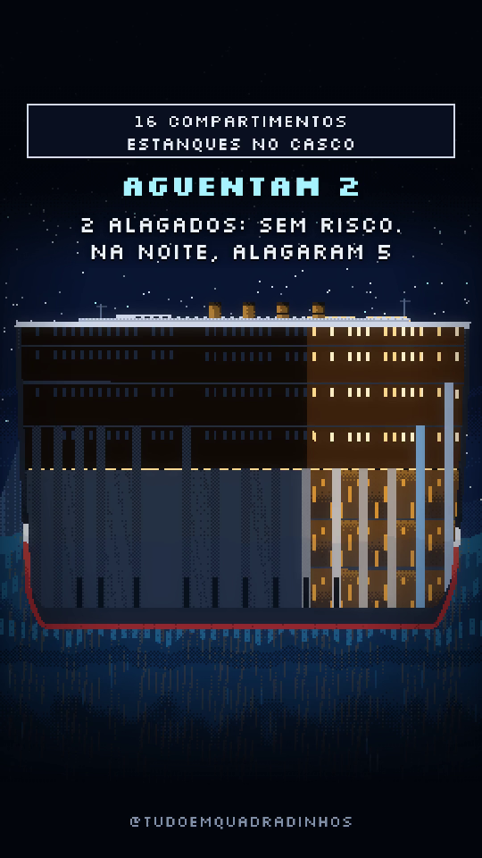
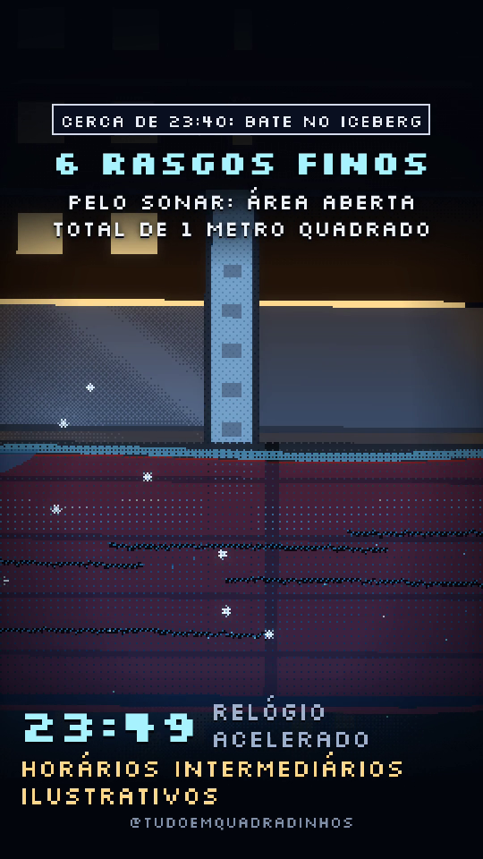
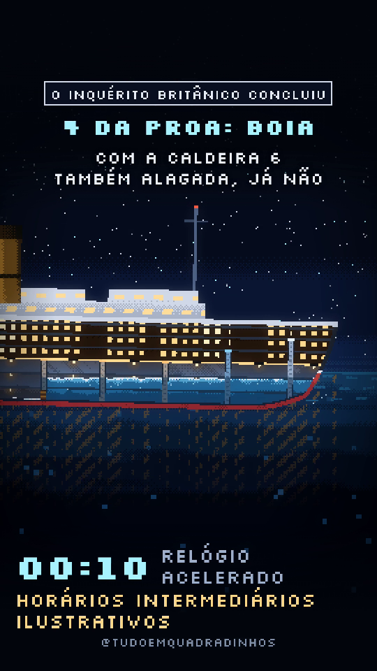
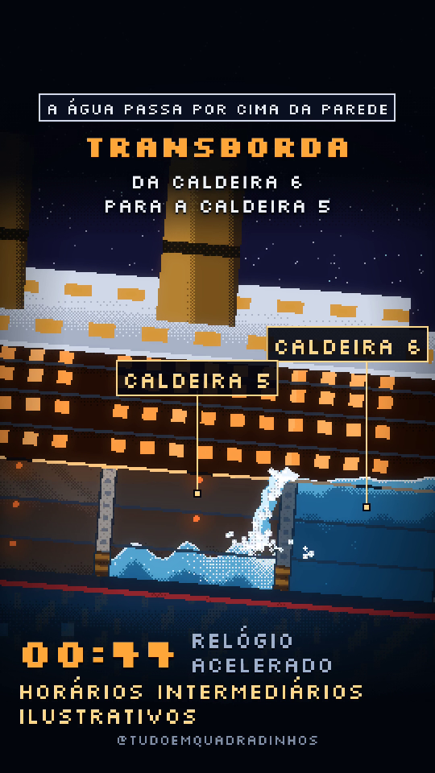
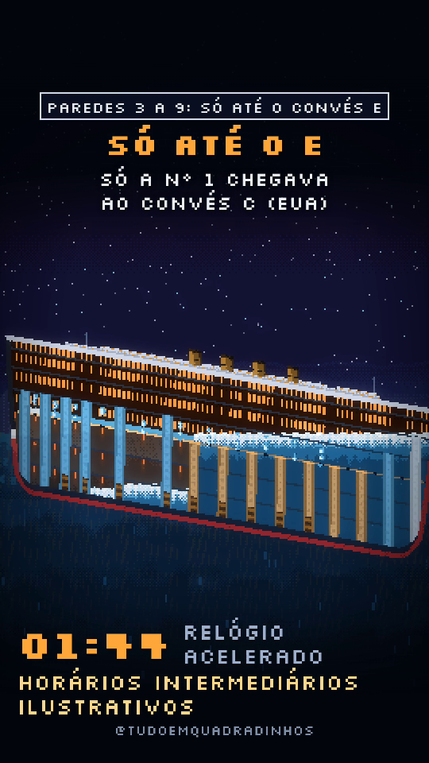
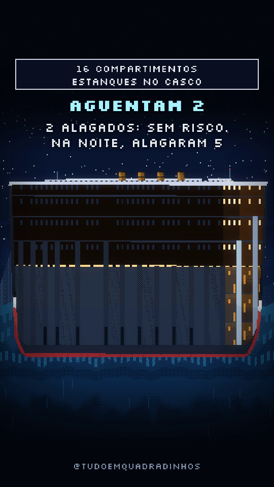

Pronto! Seu e-mail entrou na lista. O guia está logo abaixo, e também mandamos o link para o seu e-mail.
Anatomia de um short que explica
Guia gratuito do canal Tudo em Quadradinhos (@tudoemquadradinhos). Leitura de 10 minutos.
Um short que explica "como funciona" não é uma lista de curiosidades com música. É um mecanismo mostrado por dentro, acontecendo, com a tela contando uma coisa nova a cada poucos segundos. Este guia desmonta um exemplo nosso, o do Titanic (38 segundos, 8 capítulos), em sete peças. As imagens abaixo são quadros desse vídeo.
Duas combinações que valem para tudo daqui para a frente:
- Nada de renda prometida. Este guia ensina a fazer um vídeo melhor, não promete views, seguidores nem dinheiro. Ninguém consegue prometer isso com honestidade.
- Fato com fonte. Todo número que aparece na tela tem que existir numa página que você abriu e leu. Vamos mostrar como.
Peça 1. O gancho está no quadro 0

O primeiro quadro do vídeo já tem tudo: o objeto inteiro em corte (o casco com os compartimentos acesos), uma pergunta de uma linha em cima ("16 COMPARTIMENTOS ESTANQUES NO CASCO") e a promessa de contradição no meio ("AGUENTAM 2"). Quem passa o dedo no feed vê isso em menos de um segundo.
Regras que usamos:
- O quadro 0 mostra o assunto, não um título com logo e fundo preto.
- Um número ou um contraste que dá vontade de ver o resto ("aguentam 2", "alagaram 5").
- Movimento nos primeiros 15 quadros (meio segundo). Imagem parada no começo parece foto, e o feed pula foto.
- Duas a quatro mudanças de enquadramento nos primeiros 4 segundos.
Faça você: escreva o seu gancho em uma linha de até 30 letras e um número de até 14. Se não couber, a ideia ainda não está clara.
Peça 2. O corte: mostrar por dentro

O que o espectador não consegue ver sozinho é a graça do vídeo. Aqui a câmera entra por um dos seis rasgos finos do casco (um recorte lateral, estilo "corte de uma maquete") e mostra o que acontece lá dentro. Esse movimento se chama zoom através: entrar num detalhe até ele encher a tela e virar a cena seguinte, sem corte seco.
Três perguntas que decidem se um tema serve para o formato "corte":
- Que peça ou espaço o espectador vê por dentro?
- O que muda visivelmente a cada capítulo (nível que sobe, peça que gira mais rápido, calor)?
- Qual é o clímax: o único momento em que algo cruza um limite?
Sem as três respostas, o tema não serve, por melhor que seja a história. Lista de curiosidades, biografia, opinião e ideia abstrata ficam de fora.
Peça 3. Cartões: pouco texto, sempre o mesmo lugar

Texto na tela é o que mais atrapalha vídeo explicativo. Na nossa medição de quatro reels de referência (amostra pequena, sem prova de causa e efeito), os reels tinham de 13 a 32 letras por quadro. Os nossos primeiros vídeos tinham de 77 a 140. Menos é mais legível no celular.
O que fazemos:
- No máximo duas linhas visíveis por plano: uma em cima (a pergunta ou o fato), uma embaixo (o detalhe), mais um número grande se precisar.
- Limites: 30 letras em cima, 14 no número grande, 36 embaixo.
- Texto grande o suficiente para ler no celular (fonte pixel, a partir de uns 36 pixels num vídeo de 1080 de largura).
- Tudo em maiúsculas, por extenso: nada de "~" nem "%" (a fonte pixel não tem esses símbolos; escreva CERCA DE e POR CENTO).
- Cada cartão aponta para um fato da pesquisa. No quadro acima, o cartão "4 DA PROA: BOIA / COM A CALDEIRA 6 TAMBÉM ALAGADA, JÁ NÃO" sai de uma frase do relatório do inquérito britânico, pelo método da peça 6.
- O relógio que aparece no canto está marcado "ACELERADO" e "ILUSTRATIVOS": o que não é fato exato diz que não é.
Peça 4. Um só clímax

A tensão sobe o vídeo inteiro e estoura uma vez: aqui, o capítulo 5, quando a água passa por cima da parede entre duas salas ("TRANSBORDA"). Antes dele, um capítulo mais calmo (respiro). Depois, a consequência em cadeia.
- Todo capítulo traz algo novo. Um capítulo igual ao anterior é capítulo morto.
- A música acompanha: uma camada nova a cada capítulo, silêncio de uma batida antes do impacto, impacto grave na hora.
- Pausa curta (cerca de 0,17 segundo, cinco quadros) antes do golpe forte e depois um golpe de câmera (zoom de 1,04 para 1 com um flash de um quadro). Uma pausa antes do golpe faz o golpe parecer maior. Medimos esse congelamento de 5 quadros antes de cada batida forte em um dos reels de referência (Planck Pixel); é uma técnica, não garantia de resultado.
- Dois ou três climas são um vídeo confuso. Escolha um.
Peça 5. A revelação e o laço

Perto do fim vem a revelação: o fato que reorganiza o que o espectador viu. No exemplo, mostrar até que altura cada parede subia: as paredes 3 a 9 só chegavam ao convés E, e a água podia passar por cima delas.

O último quadro é igual ao primeiro. Quando o vídeo termina, ele recomeça sem corte, e quem fica assistindo vê o mesmo gancho de novo. Isso se chama loop. Para funcionar:
- O estado final da câmera volta ao do quadro 0 (mesma posição e escala).
- O que mudou no mundo (nível da água, cor) volta ao começo com um flash, ou o final rima com a abertura em vez de ser idêntico.
- A música termina num ponto que emenda com o começo (use um número exato de compassos).
Peça 6. Fatos com a frase exata da fonte
Um vídeo explicativo errado é pior que um vídeo ruim. O método que usamos é simples e vale para qualquer tema:
- Abra uma fonte primária (relatório oficial, norma, artigo de universidade, manual do fabricante). Resumo de blog só vale como ponto de partida.
- Para cada fato que vai aparecer, copie a frase exata da página, entre aspas, junto com o endereço.
- Cole numa tabela:
fato | "frase exata" | fonte. - Todo número da tela precisa estar dentro de uma dessas frases. Nunca digite um número de memória.
- Se duas fontes divergem, escreva as duas. A fonte primária vence.
Exemplo real, do nosso Titanic:
| fato | frase da fonte | fonte |
|---|---|---|
| o projeto aguentava 2 compartimentos alagados | "any 2 main compartments might be flooded without in any way involving the safety the ship" | relatório do inquérito do Senado dos EUA (1912), https://www.titanicinquiry.org/USInq/USReport/AmInqRep05.php |
(A frase vem com a falha de digitação da fonte: copie sempre igual, sem corrigir.) O texto da tela ("AGUENTAM 2") sai dessa linha. Se a frase não está na página, o cartão não existe.
Erros que já cometemos no vídeo do reator de Fukushima e que o método pegou:
- Um horário de uma enciclopédia secundária (15:42) que a cronologia oficial desmente (15:27). Fonte secundária errada passa por "verificada".
- Um gancho com sujeito errado: "desligaram" quando foi automático.
- "Derrete tudo" quando só o combustível derreteu.
Peça a alguém (ou a outro chatbot) para conferir o seu roteiro contra a tabela, às cegas, sem saber o que você acha.
Peça 7. Ritmo: uma coisa por vez
O espectador vê uma vez, na velocidade normal, pela primeira vez. Movimento demais vira ruído.
- Relógio de 8 batidas. A 100 batidas por minuto, 8 batidas são 4,8 segundos. Um capítulo = 8 batidas = uma ideia nova. Um short de 60 segundos tem 13 capítulos; um de 38 segundos, 8.
- Enquadramento novo a cada 2,5 a 5 segundos, nunca mais que 5 no mesmo.
- Câmera nunca com velocidade zero: até no plano "parado" há deriva lenta.
- Ação rápida, significado lento. O movimento pode ser rápido; o que ele significa precisa de uma pausa para o olho entender.
- Uma leitura por vez. Causa, depois reação; não as duas juntas.
- Música e imagem batem juntas. O corte cai na batida, o golpe de câmera cai no tempo forte.
- Calmo com socos localizados funciona melhor do que movimento contínuo em tudo (o contraste faz o ritmo).
Teste de 5 minutos para o seu próximo vídeo
Antes de abrir qualquer programa, responda por escrito:
- Que peça aparece em corte? (uma frase)
- O que muda a cada capítulo? (6 a 8 mudanças)
- Qual é o clímax? (uma frase)
- Qual é o texto do quadro 0? (até 30 + 14 letras)
- Quais são os 8 a 12 fatos com frase exata e fonte?
- O último quadro é igual ao primeiro?
Se as seis respostas existem, você tem um vídeo. Se não, você tem uma ideia, e ideia se corrige no papel em minutos, não no vídeo em horas.
E agora?
Esse é o esqueleto. O Kit Quadradinhos (R$ 39,90) é o método completo em aulas curtas, os prompts em português para chatbot gratuito (pesquisa com frase exata, roteiro, decupagem, checagem por um segundo chatbot), 14 peças em pixel art, 10 trilhas para usar em seus vídeos, checklists e um caminho sem código com Piskel (gratuito) e CapCut. Você precisa de computador, de paciência e de um tema que seja seu. Não vem garantia de resultado de views ou de dinheiro, e o kit diz no LEIA-ME o que não faz.
Siga o canal em @tudoemquadradinhos para ver um short novo por semana.